00이 장의 목표
02장에서 Bitstream을 생성한 기존 하드웨어를 XSA로 내보내고, Vitis에서 MicroBlaze V의 ELF 프로그램을 빌드해 Local BRAM 읽기·쓰기를 확인한다.
- Reset Vector
- PC
- ILMB / DLMB
- BRAM
- ELF
- Linker Script
- XSA
- Vitis
01Reset 이후 프로그램 실행
SoC 02에서 mb_reset이 해제되면 MicroBlaze V는 프로그램 실행을 시작한다. CPU는 임의의 C 함수부터 실행하는 것이 아니라 먼저 Reset Vector 주소에서 명령어 Fetch를 시작한다.
02Reset Vector와 PC
MicroBlaze V는 Reset 또는 Debug Reset이 발생하면 Pipeline을 비우고 C_BASE_VECTORS + 0x0에서 즉시 명령어 Fetch를 시작한다. 기본 C_BASE_VECTORS 값은 0x00000000이다.
| 항목 | 기본 기준 | 의미 |
|---|---|---|
C_BASE_VECTORS | 0x00000000 | Reset 기준 주소 |
| Reset Vector | C_BASE_VECTORS + 0x0 | Reset 해제 후 첫 Fetch 위치 |
PC | Reset Vector를 가리킴 | 다음 실행 명령어의 주소 |
0x00000000을 포함해야 한다.03ILMB · DLMB · BRAM

| 경로 | 주요 역할 | 대표 접근 |
|---|---|---|
ILMB | Instruction Local Memory Bus | Reset Vector, Startup Code, .text 명령어 Fetch |
DLMB | Data Local Memory Bus | .data, .bss, Stack, Heap, 변수 Load/Store |
| Dual-Port BRAM | 공통 Local Memory | Instruction과 Data 접근을 서로 다른 Port로 처리 |
UG1711도 ILMB를 빠른 Instruction Local Memory용, DLMB를 Data와 Vector용 Local Memory 경로로 설명한다.
04BRAM 주소 범위
SoC 01에서 Local Memory를 16 KB로 설정하고 Base Address가 0x00000000이라면 교육용 기준 주소 범위는 다음과 같이 계산할 수 있다.
| 항목 | 교육용 기준값 |
|---|---|
| Local Memory Size | 16 KB |
| Base Address | 0x00000000 |
| High Address | 0x00003FFF |
0x00000000 ~ 0x00003FFF는 SoC 01의 16 KB Local Memory를 Base 0으로 배치한 기준 구성이다.05ELF 프로그램 구조
Vitis에서 C 소스를 Build하면 MicroBlaze V용 ELF(Executable and Linkable Format, 실행·링크 정보를 포함하는 실행 파일)가 생성된다. ELF에는 명령어뿐 아니라 초기값이 있는 변수, 초기화되지 않은 변수, Vector, Stack·Heap 배치 정보가 함께 반영된다.
| 단계 | 결과 |
|---|---|
| main.c | C 소스 |
| RISC-V GCC · Vitis 도구 체인 | Compile → Assemble → Link |
| Application.elf | .text.init / .text / .rodata / .data / .bss / .heap / .stack |
06Linker Script와 Memory Section
MicroBlaze V의 시작 코드는 생성된 RISC-V BSP와 Linker Script를 사용한다. .text.init의 _boot에서 트랩 벡터·레지스터·스택을 준비한 뒤 C 런타임과 main()으로 연결된다. 설치된 BSP의 실제 시작 심볼과 섹션 배치를 확인한다.
| 영역 | 내용 | 확인 |
|---|---|---|
| .text.init / .text | 시작 코드와 프로그램 명령어 | Reset 주소에서 실행 가능한 코드 배치 |
| .rodata / .srodata | 읽기 전용 상수 | 실제 Linker Map의 섹션 |
| .data / .sdata | 초기값을 갖는 전역·정적 변수 | 초기화 이미지·실행 주소 |
| .bss / .sbss | 초기화되지 않은 전역·정적 변수 | C 시작 과정의 0 초기화 |
| Stack / Heap | 함수 호출·동적 메모리 | 16 KiB BRAM 범위·영역 중복 없음 |
큰 라이브러리 호출을 추가하기 전에 코드·데이터·스택·힙의 전체 크기를 확인한다. 이 예제는 UART 출력 없이 메모리 변수로 실행을 확인한다.
07Vivado 2024.2 · XSA Hardware Export
02장에서 Generate Bitstream까지 완료한 동일한 Vivado 프로젝트에서 XSA(Xilinx Support Archive, 하드웨어 플랫폼 파일)를 내보낸다.
Export Hardware 실행
Vivado 2024.2의 File → Export → Export Hardware를 선택한다.
Export Hardware Platform 시작
Export Hardware Platform 시작 화면이 나타나면 Next를 클릭한다. 이 실습에서는 별도의 Fixed Platform 선택 화면을 찾을 필요가 없다.
Output — Include bitstream
Output 화면에서 Include bitstream을 선택한 후 Next를 클릭한다. 02장에서 생성한 Bitstream을 XSA에 포함하는 단계이다.
Files — XSA 저장
Files 화면에서 자동 입력된 XSA file name과 Export to 저장 경로를 확인한다. 파일명은 기본값을 유지하고 Next → Finish로 완료한다. 해당 경로에
*.xsa파일이 생성되었는지 확인한다.
Vivado 2024.2 단계별 참고: AMD UG1579 · Exporting a Hardware Description · AMD UG1209 · Exporting Hardware
08Vitis Platform 생성
Vitis Unified IDE 실행
새 Workspace를 연다.
Platform Component 생성
Vivado에서 Export한 XSA를 Hardware Design으로 선택한다.
Processor 확인
Target Processor가
microblaze_riscv_0인지 확인한다.Hardware Memory 확인
Platform이 Local BRAM의 Address Range를 인식하는지 확인한다.
새 XSA로 MicroBlaze V용 Platform과 standalone Domain을 생성한다. Processor 종류는 microblaze_riscv, 인스턴스는 microblaze_riscv_0로 확인한다.
Vitis 2024.2 — Platform 생성 순서
- ① Workspace 실행
Vitis Unified IDE의 Workspace를
~/soc/sw로 설정한다. 기존 Vivado 하드웨어 프로젝트는 이동하지 않는다. - ② Create Platform Component
왼쪽 Vitis Explorer의 Create Platform Component 클릭. Name
soc_01_platform, Component location~/soc/sw입력 → Next. - ③ Flow / XSA 선택
Hardware Design 선택. Hardware Design (XSA) For Implementation에
~/soc/hw/soc01_microblaze_bram/soc01_mb_bram_wrapper.xsa지정 → Next. - ④ OS and Processor
Operating system
standalone, Processormicroblaze_riscv_0선택 → Next. - ⑤ Summary / Finish
Name
soc_01_platform, Workspace~/soc/sw, Processormicroblaze_riscv_0를 대조한 후 Finish. - ⑥ Platform Build 확인
Vitis Explorer에
soc_01_platform이 생성되고 OUTPUT에Platform Build Finished successfully.가 나타나는지 확인한다. 자동 Quick Build가 성공했으면 다시 Build하지 않는다.
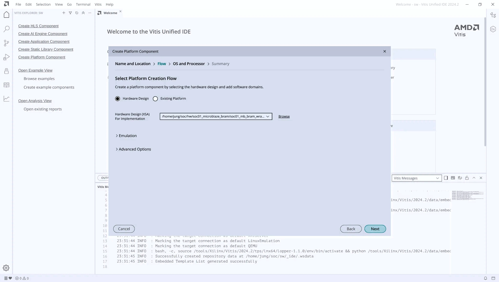
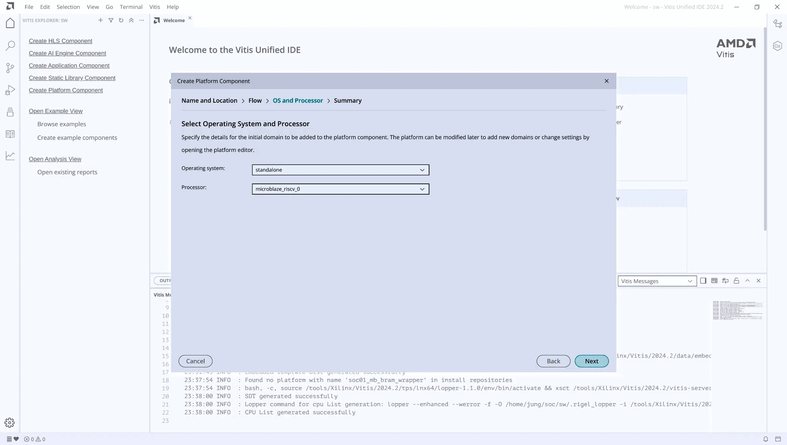
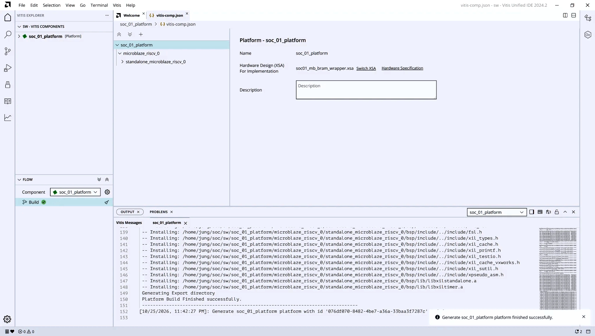
09Standalone Domain
SoC 03은 Operating System 없이 MicroBlaze V가 C 프로그램을 직접 실행하는 Bare-Metal 구조를 사용한다. 따라서 Platform 안에 Standalone Domain을 구성한다.
| 항목 | SoC 03 기준 |
|---|---|
| Processor | microblaze_riscv_0 |
| Operating System | standalone |
| Architecture | Vivado MicroBlaze V Hardware 설정과 일치 |
| Memory | Local BRAM |
Standalone Domain 확인
- ① Platform 열기
soc_01_platform의vitis-comp.json열기. - ② 트리 확인
soc_01_platform → microblaze_riscv_0 → standalone_microblaze_riscv_0가 존재하는지 확인한다. - ③ BSP 성공 판정
OUTPUT에
Domain standalone_microblaze_riscv_0 added successfully.및 Platform Build 성공 메시지가 표시되는지 확인한다. - ④ 다음 단계
새 Domain을 중복 생성하지 않는다. Application 생성 시 기존 Domain을 선택한다.
10Application Component
Application Component 생성
앞에서 만든 Platform과 Standalone Domain을 선택한다.
Application 이름 지정
예:
soc03_bram_runSource 추가
main.c를 Application Source로 추가한다.Linker Memory 확인
Program Section이 Local BRAM에 배치되는지 확인한다.
Application Component — 5개 마법사 화면
- ① Name and Location
Vitis Explorer 상단 + → Application Component. Component name
soc03_bram_run, Location~/soc/sw→ Next. - ② Hardware
soc_01_platform선택. Boardbasys3, FlowEmbedded확인 → Next. - ③ Domain
standalone_microblaze_riscv_0선택. OSstandalone, Processormicroblaze_riscv_0확인 → Next. - ④ Source Files
소스 목록을 비워 두고 Next.
Copy sources to component는 기본 체크 상태로 둔다.main.c는 생성 후 직접 작성한다. - ⑤ Summary
Name
soc03_bram_run, Platformsoc_01_platform, Domainstandalone_microblaze_riscv_0를 확인하고 Finish. - ⑥ 결과 확인
Explorer에
soc03_bram_run [Application]표시 및 Location~/soc/sw/soc03_bram_run확인.
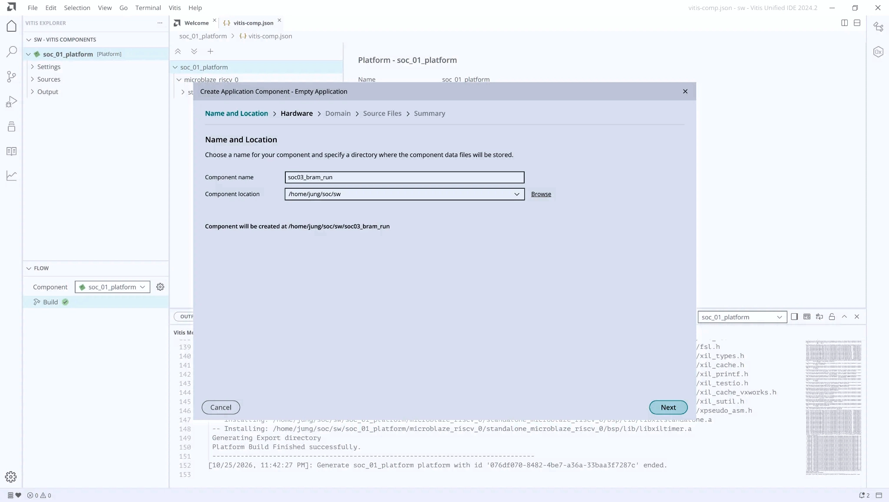
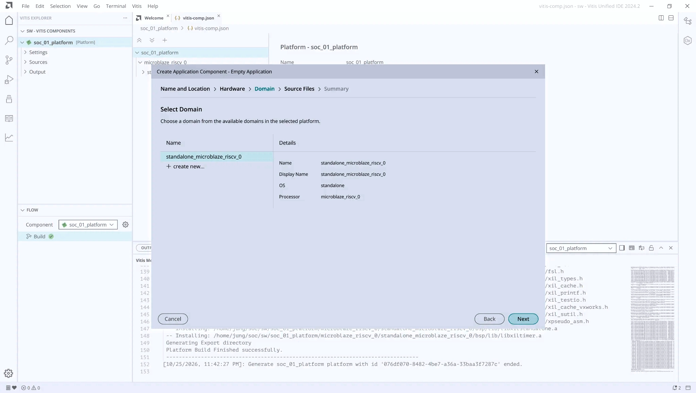
11BRAM Read / Write 확인 프로그램
실습은 main.c를 Vitis에서 직접 생성하고 아래의 코드를 작성한다. 입력 대조용: main.c 전체 소스.
UART나 GPIO 없이 같은 BRAM 변수에 값을 쓰고, 다시 읽고, 값을 변경해서 다시 쓰고, 변경된 값을 다시 읽는 과정을 Debugger에서 직접 확인한다. 이 코드는 SoC 03의 메모리 동작 확인을 위해 작성한 교육용 예제이다.
#include <stdint.h>
volatile uint32_t memory_data = 0;
volatile uint32_t read_value_1 = 0;
volatile uint32_t read_value_2 = 0;
volatile uint32_t read_value_3 = 0;
volatile uint32_t stage = 0;
int main(void)
{
// 1단계: 첫 번째 값을 BRAM에 쓴다.
memory_data = 0x11111111U;
stage = 1;
// 2단계: 방금 쓴 값을 다시 읽는다.
read_value_1 = memory_data;
stage = 2;
// 3단계: 같은 BRAM 변수에 다른 값을 다시 쓴다.
memory_data = 0x22222222U;
stage = 3;
// 4단계: 변경된 값을 다시 읽는다.
read_value_2 = memory_data;
stage = 4;
// 5단계: 두 읽기 값을 더한 결과를 다시 쓴다.
memory_data = read_value_1 + read_value_2;
stage = 5;
// 6단계: 최종 값을 다시 읽는다.
read_value_3 = memory_data;
stage = 6;
while (1) {
// Debugger에서 값을 확인하기 위한 정지 상태
}
return 0;
}| 단계 | 동작 | memory_data | 읽기 결과 |
|---|---|---|---|
| 초기 | 초기화 | 0x00000000 | - |
| 1 | 첫 번째 Write | 0x11111111 | - |
| 2 | 첫 번째 Read | 0x11111111 | read_value_1 = 0x11111111 |
| 3 | 같은 위치에 다시 Write | 0x22222222 | - |
| 4 | 변경값 Read | 0x22222222 | read_value_2 = 0x22222222 |
| 5 | 읽은 두 값의 합을 Write | 0x33333333 | - |
| 6 | 최종값 Read | 0x33333333 | read_value_3 = 0x33333333 |
volatile을 사용하여 Compiler가 이 메모리 접근을 불필요한 연산으로 제거하지 않도록 한다. 변수의 실제 BRAM 주소는 Linker가 결정하므로 특정 BRAM 주소를 코드에 임의로 고정하지 않는다.main.c 신규 작성 — 다운로드로 대체하지 않음
- ① src 폴더 펼치기
Vitis Explorer →
soc03_bram_run → Sources → src. - ② New File
src오른쪽 클릭 → New File →main.c입력 → OK. - ③ C 코드 작성
바로 아래에 있는 교재의 BRAM Read / Write C 코드 전체를 새 파일에 입력한다. 변수명
memory_data,read_value_1,read_value_2,read_value_3,stage와 1~6단계 코드를 유지한다. - ④ Ctrl+S 저장
저장 후 Explorer에서 다시 열어 코드가 표시되는지 확인한다. Ubuntu에서는
wc -c ~/soc/sw/soc03_bram_run/src/main.c가 0이 아님을 확인한다. - ⑤ 저장 실패 예방
빈 편집기 또는 0바이트 파일을 발견하면 Build/Debug를 진행하지 않는다.
ls -lh및sed -n '1,80p'로 실제 파일 내용을 먼저 검사한다.
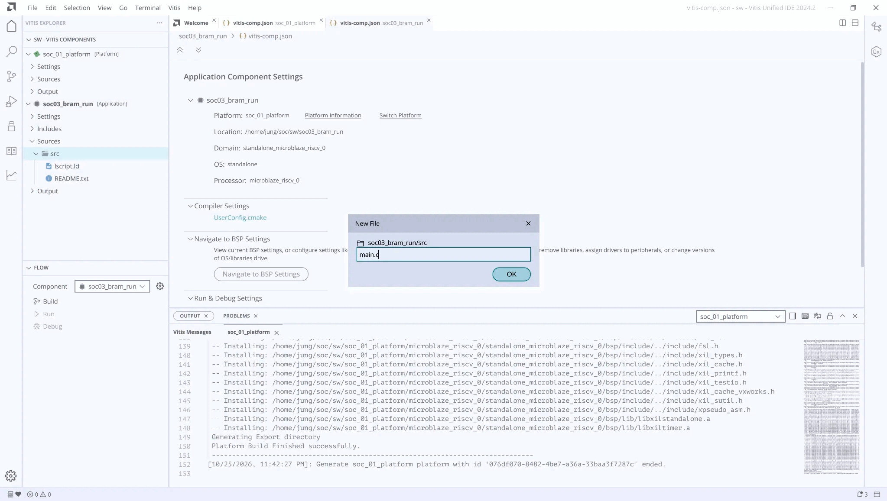
12Build와 ELF 생성
Application을 Build하면 MicroBlaze V GNU Toolchain이 C Source를 Compile·Assemble·Link하고 ELF 실행 파일을 만든다.
| 확인 파일 | 의미 |
|---|---|
*.elf | MicroBlaze V 실행 파일 |
| Linker Script | Section → Memory 배치 규칙 |
| Build Log | Compiler/Linker Error, Memory Overflow 확인 |
MicroBlaze V용 RISC-V 컴파일러와 생성 BSP를 사용한다. ELF의 Machine은 RISC-V, ABI는 ILP32이며 ISA 옵션은 CPU에서 활성화한 명령어 확장과 맞아야 한다. 실제 Vitis 2024.2 빌드 로그에서는 -march=rv32i_zicsr_zifencei, -mabi=ilp32를 확인한다. CPU 설정과 빌드 로그를 기준으로 확인한다. 캐시는 ISA 옵션과 별도로 하드웨어 설정에서 확인한다. Build Log의 실제 컴파일러 경로·옵션과 Linker Map을 확인한다.
Application Build 순서 및 ELF 성공 판정
- ① 파일 저장
main.c에서 Ctrl+S. 파일 크기가 0이 아님을 확인한다. - ② Component 선택
FLOW → Component에
soc03_bram_run선택. Platformsoc_01_platform을 선택한 상태로 혼동하지 않는다. - ③ Build
FLOW의 Build 클릭 → 하단 OUTPUT의
soc03_bram_run::build로그 확인. - ④ 성공 로그
Build Finished successfully와soc03_bram_run.elf확인. 실제 로그에서 text4840, data204, bss3532bytes를 확인한다. - ⑤ 컴파일러 설정
실제 빌드 명령에서
-march=rv32i_zicsr_zifencei,-mabi=ilp32가 관찰되었다. 임의로 RV32IM이라고 확정하지 않는다.
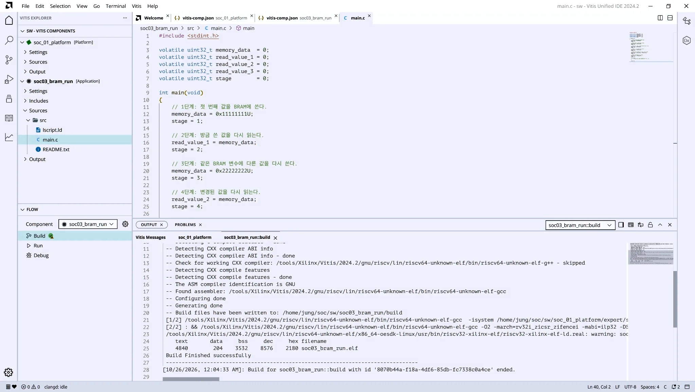
13BRAM 배치 확인
Vitis의 Linker Script 또는 Memory Layout에서 Vector, Code, Data, Stack, Heap이 Local BRAM Memory Region에 배치되는지 확인한다.
| 배치 순서 | 영역 |
|---|---|
| 시작 · 0x00000000 | .text.init / Other Vector Sections |
| 명령어·상수 | .text / .rodata |
| 변수 | .data / .sdata / .bss / .sbss |
| 동적 메모리 | Heap |
| 상단 · 0x00003FFF | Stack |
| 범위 | 16 KB 기준 예시 |
각 Section의 정확한 시작 주소와 크기는 Build 결과와 Linker Script에 따라 달라질 수 있으므로 위 그림의 세로 배치는 개념적 구조로 사용한다.
Linker Script 실제 설정 확인
- ① 파일 열기
Explorer →
soc03_bram_run → Sources → src → lscript.ld클릭. - ② BRAM 범위
Region
lmb_bram_0, Base0x0, Size0x4000→ 16 KiB 확인. - ③ Stack / Heap
Stack
0x400(1 KiB), Heap0x800(2 KiB) 확인. - ④ 섹션 확인
GUI 아래쪽의
.text,.data,.bss등의 섹션이lmb_bram_0에 배치되는지 스크롤하여 확인한다. - ⑤ 변경 불필요
Application Link가 이미 성공했으므로
lscript.ld를 임의 수정하지 않는다. 실제 사용량은 섹션 정렬·추가 영역을 고려한 Linker 결과를 기준으로 판단한다.
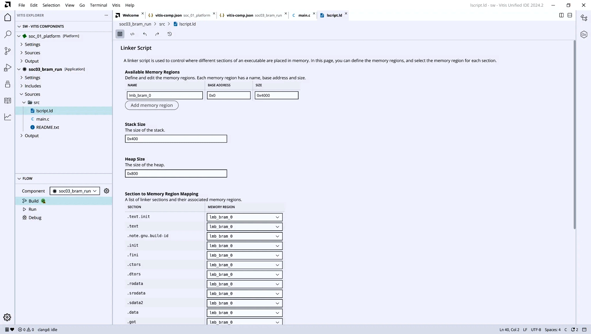
14Target 연결
Basys3 USB 연결
JTAG USB Cable을 PC와 연결한다.
Hardware Target 확인
Vitis 또는 Hardware Server에서 Basys3 FPGA Target을 확인한다.
MicroBlaze V Target 확인
FPGA Bitstream이 Program된 뒤 Debug Target에
microblaze_riscv_0이 표시되는지 확인한다.
JTAG 대상은 MDM V에 연결된 MicroBlaze V hart(하트, 실행 하드웨어 단위)를 선택한다. 하드웨어 설정 후 Reset/Halt → ELF 다운로드 → main() 중단점 → Run 순서로 확인한다.
Basys3 연결 및 Ubuntu USB 인식
- ① PROG/UART 연결
Basys3의 PROG/UART USB 단자에 PC의 USB 케이블을 연결하고 보드 전원을 켠다.
- ② FTDI 장치 인식
Ubuntu 터미널에서
lsusb -d 0403:6010실행. 실제 실습에서는 Digilent FT2232 USB 장치가 확인되었다. - ③ Hardware Server 확인
ps -ef | grep -E '[h]w_server|[c]s_server'실행. Vitis가 시작한hw_server프로세스가 있는지 확인한다. - ④ JTAG와 UART 구분
USB 연결 확인과 FPGA JTAG 검출은 별도 단계이다.
- ⑤ 다음 단계
Vivado로 돌아가지 않고 Vitis의
launch.json에서 Bitstream Program을 진행한다. 검색 실패 시 SECTION 19 오류 복구 절차를 적용한다.
xc7a35t, RISC-V → Hart #0가 표시되는지로 판단한다.15FPGA Program Device
AMD UG1400 · Program Device (2024.2) · 공식 화면 및 절차
Connection 선택
Local Hardware Target 또는 설정한 Hardware Server를 선택한다.
Bitstream 확인
SoC 01~02에서 생성한 Hardware Bitstream을 선택한다.
Program
FPGA를 Configuration하여 MicroBlaze V Hardware를 실제 FPGA 내부에 구성한다.
Vitis에서 Bitstream 및 ELF 자동 다운로드 설정
- ① 실행 설정 링크
상단
vitis-comp.json (soc03_bram_run)선택 → Run & Debug Settings 펼치기 →launch.json클릭. 이 단계에 링크만 보이는 것은 정상이다. - ② Launch Configuration
soc03_bram_run_app_hw_1선택. Target ConnectionLocal [default], Target Setup ModeBaremetal Debug확인. - ③ Bitstream 경로
soc03_bram_run/_ide/bitstream/soc01_mb_bram_wrapper.bit가 지정되어 있는지 확인. 이 경로는 현재 Workspace에 상대적인 파일이다. - ④ Download 설정
Reset Entire System 및 Program Device 체크 상태 유지. 이 옵션을 이용해 Vitis에서 FPGA Bitstream을 직접 다운로드한다.
- ⑤ CPU / ELF
Processor
microblaze_riscv_0, Applicationsoc03_bram_run/build/soc03_bram_run.elf확인. Reset Processor 체크. - ⑥ STOP AT ENTRY
선택 사항이다. 실제 정상 실습에서는 기본 체크 해제 상태로도
main()의 중단점에서 멈췄다. 불필요하게 변경하지 않는다.
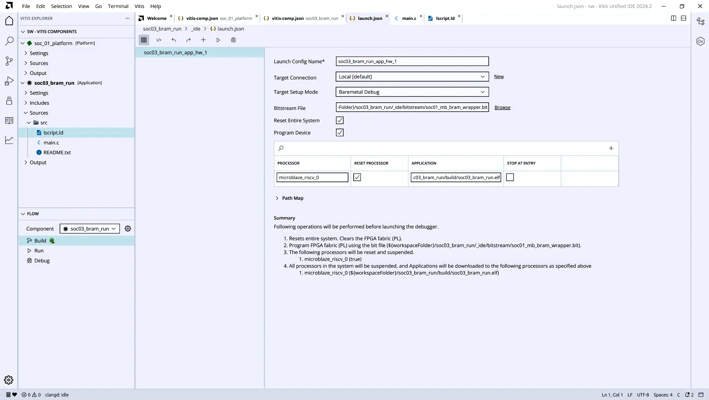
16Application Run
AMD UG1400 · Running the Application Component (2024.2) · 공식 화면 및 절차
이번 프로그램은 UART 출력이 없으므로 Run 화면에 문자열이 출력되는 것을 성공 기준으로 삼지 않는다.
Vitis Debug 시작과 CPU 연결 확인
- ① FLOW에서 Debug
Vitis Explorer의 Component를
soc03_bram_run으로 선택하고 왼쪽 FLOW의 Debug 클릭. - ② FPGA 탐색 실패 시
Could not find FPGA device on the board for connection 'Local'.메시지가 나타나면 비트스트림 다운로드 성공이 아니다. SECTION 19의 Linux 케이블 드라이버 절차부터 점검한다. - ③ CPU 인식
성공한 경우 왼쪽 DEBUG 패널에
xc7a35t및RISC-V → Hart #0가 나타난다. - ④ 실행 정지
Hart #0: PAUSED ON BREAKPOINT와 CALL STACK의main(): main.c, line 10표시를 확인한다. - ⑤ C 소스가 비어 있다면
CALL STACK의
main()을 더블클릭한다. 여전히 빈 화면이면 터미널에서main.c가 0바이트인지 확인하고 SECTION 19를 따른다.
17Debugger로 Read / Write 확인
이번 실습에서는 volatile 전역 변수와 F10 단계 실행으로 관찰했다. 실제 Build 로그에는 -O2가 보이므로, 정밀한 행 단위 디버깅이 어려운 경우에만 디버그 정보와 -O0 옵션을 설정해 다시 빌드한다. while (1)은 CPU가 반복 명령을 실행하는 대기 루프이며 디버거의 정지 상태가 아니다. 최종값은 Suspend / Halt로 CPU를 멈춘 뒤 Watch에서 확인한다. 각 stage 대입문까지 실행한 다음 아래 표와 비교한다. UG1400 · Debug / Optimization 설정.
Vitis Debugger의 Watch 창에는 memory_data, read_value_1, read_value_2, read_value_3, stage를 등록한다. 각 대입문에 Breakpoint를 걸거나 Step Over로 한 줄씩 실행하면 값의 변화를 직접 확인할 수 있다.
stage | memory_data | read_value_1 | read_value_2 | read_value_3 |
|---|---|---|---|---|
| 0 | 00000000 | 00000000 | 00000000 | 00000000 |
| 1 | 11111111 | 00000000 | 00000000 | 00000000 |
| 2 | 11111111 | 11111111 | 00000000 | 00000000 |
| 3 | 22222222 | 11111111 | 00000000 | 00000000 |
| 4 | 22222222 | 11111111 | 22222222 | 00000000 |
| 5 | 33333333 | 11111111 | 22222222 | 00000000 |
| 6 | 33333333 | 11111111 | 22222222 | 33333333 |
main()Breakpointmain()첫 줄에서 멈춘 뒤 Watch 창에 다섯 변수를 등록한다.첫 번째 Write
memory_data = 0x11111111U;실행 후memory_data가 바뀌는지 확인한다.첫 번째 Read
read_value_1 = memory_data;실행 후 두 값이 모두0x11111111인지 확인한다.덮어쓰기
memory_data = 0x22222222U;실행 후 같은 변수 값이 변경되는지 확인한다.변경값 Read
read_value_2가0x22222222가 되는지 확인한다.계산 후 다시 Write
read_value_1 + read_value_2의 결과인0x33333333이memory_data에 저장되는지 확인한다.최종 Read
read_value_3가0x33333333인지 확인한다.
stage = 6, memory_data = 0x33333333, read_value_1 = 0x11111111, read_value_2 = 0x22222222, read_value_3 = 0x33333333.WATCH 변수 5개 등록과 단계별 실행
- ① 시작 위치 확인
왼쪽 DEBUG → RISC-V → Hart #0가
PAUSED ON BREAKPOINT이고main.c10행의 실행 표시가 있는지 확인한다. - ② WATCH 등록
왼쪽 WATCH 제목 오른쪽 + 클릭 후
memory_data,read_value_1,read_value_2,read_value_3,stage를 하나씩 Enter로 등록한다. - ③ F10 / F5 구분
F10 = Step Over(한 줄씩 실행), F5 = Continue(다음 중단점까지 실행). 단계별 관찰에서는 F10을 사용한다. F5로 전부 실행하지 않는다.
- ④ Stage 1 확인
memory_data = 0x11111111U;와stage = 1;가 실제로 실행된 뒤 WATCH에서memory_data=0x11111111,stage=1확인. - ⑤ Stage 2~5 확인
각
stage = N;을 실행한 다음 WATCH를 확인한다. 현재 노란 화살표가 가리키는 행은 앞으로 실행할 문장이다. - ⑥ Stage 6 확인
마지막
stage = 6;을 실행하면 예상값은memory_data=0x33333333,read_value_1=0x11111111,read_value_2=0x22222222,read_value_3=0x33333333,stage=6. - ⑦ 정지 상태
while (1)은 CPU가 무한히 실행하는 코드이지 디버거 자동 일시 정지 기능이 아니다. 최종값을 안정적으로 캡처하려면 35행에 중단점을 걸거나 디버거 Pause를 사용한다.
| 실행 완료 stage | memory_data | read_value_1 | read_value_2 | read_value_3 |
|---|---|---|---|---|
| 0 | 0x00000000 | 0x00000000 | 0x00000000 | 0x00000000 |
| 1 | 0x11111111 | 0x00000000 | 0x00000000 | 0x00000000 |
| 2 | 0x11111111 | 0x11111111 | 0x00000000 | 0x00000000 |
| 3 | 0x22222222 | 0x11111111 | 0x00000000 | 0x00000000 |
| 4 | 0x22222222 | 0x11111111 | 0x22222222 | 0x00000000 |
| 5 | 0x33333333 | 0x11111111 | 0x22222222 | 0x00000000 |
| 6 | 0x33333333 | 0x11111111 | 0x22222222 | 0x33333333 |
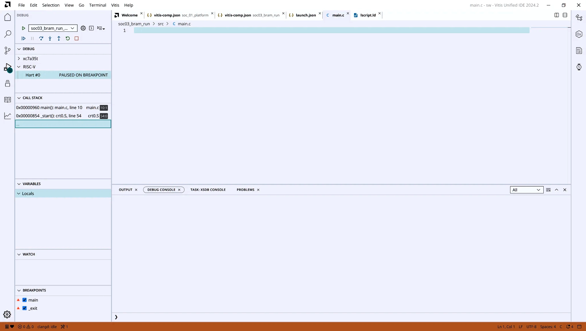
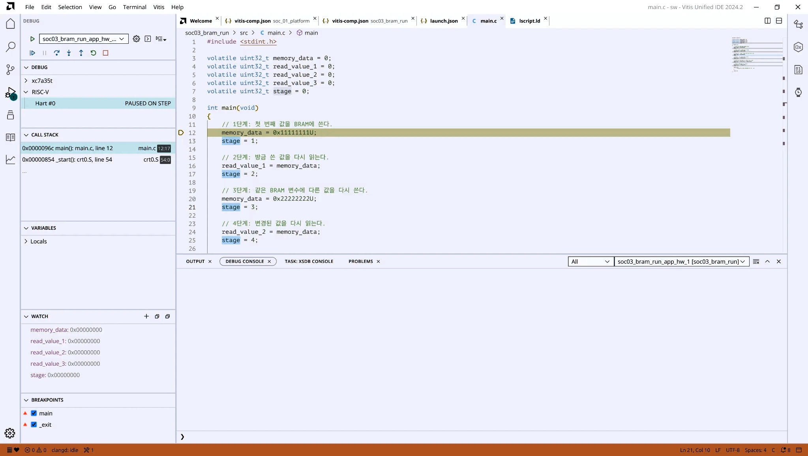
18실행 흐름 전체 추적
이 실습에서는 명령어는 ILMB를 통해 Fetch되고, 전역 변수에 대한 Read/Write는 DLMB를 통해 Local BRAM으로 전달된다. SoC 04부터는 여기에 AXI를 이용한 Memory-Mapped I/O가 추가된다.
19오류 점검
| 증상 | 주요 원인 | 확인 위치 |
|---|---|---|
main()에 도달하지 않음 | Reset 해제 문제, Vector/BRAM Mapping 오류 | mb_reset, Reset Vector, Linker Script |
| ELF Download 실패 | XSA/Platform 불일치, Target 연결 문제 | Platform Hardware Spec, JTAG Target |
| Build에서 Memory Overflow | 16 KB보다 Program Section이 큼 | Linker Map, .text, Library 사용량 |
stage가 변하지 않음 | CPU 미실행, 최적화/관찰 위치 문제 | Breakpoint, PC, Watch |
| 주소가 예상과 다름 | Vivado Address Editor 또는 Linker Script 배치가 다름 | 실제 Address Range 확인 |
| Vitis에 Processor가 안 보임 | 잘못된 XSA, Platform 갱신 누락 | XSA와 Platform Processor 목록 |
| Program 후 CPU가 Reset 상태 | Clock/Reset 연결 문제 | SoC 02의 locked → dcm_locked 재확인 |
실제 오류 ① — JTAG 장치 검색 실패
- ① 증상
Could not find FPGA device on the board for connection 'Local'.메시지가 나타나며 Debug가 실패했다. - ② USB / 서버 확인
lsusb -d 0403:6010과ps -ef | grep -E '[h]w_server|[c]s_server'명령으로 FTDI USB 장치와 서버를 확인한다. - ③ 드라이버 설치
cd /tools/Xilinx/Vivado/2024.2/data/xicom/cable_drivers/lin64/install_script/install_drivers후sudo ./install_drivers실행.Driver installation successful.확인. - ④ 규칙 갱신
sudo udevadm control --reload-rules와sudo udevadm trigger실행. 그리고 물리적으로 Basys3 USB 케이블을 빼고 다시 연결한다. - ⑤ 경고 문구 구분
드라이버 설치 출력의
CRITICAL WARNING: Cable(s) ... must be unplugged then plugged back in은 안내 문장이지 Bash 명령이 아니다. - ⑥ 재연결 상태
USB 재연결 후 Bus/Device 번호가 달라질 수 있다. 실제 실습에서는
0403:6010과 USB 권한crw-rw-rw-를 확인한다./dev/ttyUSB1만 존재해도 JTAG 연결에는 문제가 없을 수 있다. - ⑦ 정상 판정
다시 Vitis Debug를 실행하고
xc7a35t → RISC-V → Hart #0가 보이면 연결에 성공한 것이다.
실제 오류 ② — main.c가 0바이트로 비어 있음
- ① 현상
Debug가
main()중단점에 도착했지만 C 편집기에는 코드가 표시되지 않았다. 확인 결과main.c크기가 0바이트였다. - ② 존재와 내용 확인
ls -lh ~/soc/sw/soc03_bram_run/src/main.c및sed -n '1,80p' ~/soc/sw/soc03_bram_run/src/main.c실행. - ③ 소스 복구
기존 파일을 백업한 뒤 SECTION 11의 코드를 다시 작성한다. 다른 프로그램으로 대체하거나 변수명 및 1~6단계 구조를 변경하지 않는다.
- ④ 재빌드
wc -c ~/soc/sw/soc03_bram_run/src/main.c의 값이 0이 아닌 것을 확인하고 FLOW → Build를 다시 실행한다. - ⑤ Debug 다시 확인
Build Finished successfully.확인 후 Debug 실행,main.c에 코드가 보이고 10행에서 멈춘 것을 확인한다. 이전 ELF가 남아 있는 것만으로 성공 판정하지 않는다.
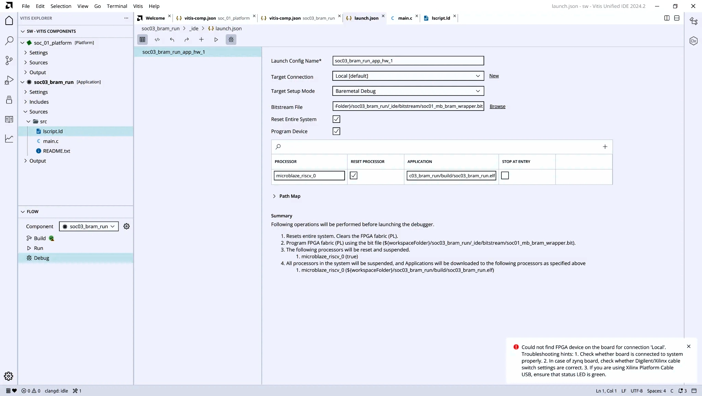
20SoC 03 완료 확인
- Reset 해제 후 MicroBlaze V가 Reset Vector에서 Fetch를 시작한다는 것을 설명할 수 있다.
- 기본
C_BASE_VECTORS가0x00000000임을 확인한다. - ILMB는 Instruction, DLMB는 Data 접근 경로라는 것을 구분한다.
- ILMB/DLMB가 Dual-Port BRAM으로 연결되는 실제 구조를 이해한다.
- 16 KB가
0x4000Byte임을 계산할 수 있다. - ELF의
.text.init,.text,.data,.bss, Heap, Stack 역할을 구분한다. - 02장에서 생성한 Bitstream을 포함해 Vivado 하드웨어 설계를 XSA로 내보냈다.
- XSA를 Export하고 Vitis Platform에 연결했다.
- Standalone Domain과 MicroBlaze V Application을 생성했다.
main.c를 Build하여 ELF를 생성했다.- Program Section이 Local BRAM에 배치되는지 확인한다.
- Basys3 Target과
microblaze_riscv_0Debug Target을 확인한다. - Debugger에서
main()까지 실행되는지 확인한다. - Debugger에서 Write → Read → Re-Write → Re-Read 순서를 확인한다.
- 최종 예상값
stage = 6,memory_data = 0x33333333,read_value_3 = 0x33333333을 WATCH로 확인한다.
21참고 문서
| 문서 | 확인 항목 |
|---|---|
| AMD UG1629 · MicroBlaze V Processor Reference Guide · Reset · 2024.2 | Reset 시 Pipeline Flush, C_BASE_VECTORS + 0x0에서 Instruction Fetch 시작 |
| AMD UG1711 · Local Memory Bus Interfaces · 2024.2 | ILMB Instruction Local Memory, DLMB Data/Vector Local Memory |
| AMD PG112 · LMB Block RAM Interface Controller | ILMB/DLMB → LMB Controller → Dual-Port BRAM 구조 |
| AMD UG1400 · Linker Scripts · 2024.2 | Vector, Text, Data, BSS, Heap, Stack Section |
| AMD UG1400 · User and Program Memory · 2024.2 | Instruction, Read-only, Read-write, Stack, Heap의 Program Memory 구성 |
| AMD UG1400 · Creating a Hardware Design (XSA File) · 2024.2 | Vivado Hardware → Bitstream → XSA Export |
| AMD UG1400 · Program Device · 2024.2 | Bitstream/PDI, BMM/MMI, ELF 결합과 Device Program |
| AMD UG1400 · Running the Application Component · 2024.2 | Launch Configuration, Target Connection, Application Run |
| AMD Standalone RISC-V · boot.S | _boot와 .text.init의 실제 시작 코드 |
22실습 파일
#include <stdint.h>
/*
* SoC 03 교육용 BRAM Read/Write 검증 코드
*
* Vitis Debugger의 Watch / Memory 창에서 확인할 값:
*
* stage 1 : memory_data = 0x11111111
* stage 2 : read_value_1 = 0x11111111
* stage 3 : memory_data = 0x22222222
* stage 4 : read_value_2 = 0x22222222
* stage 5 : memory_data = 0x33333333
* stage 6 : read_value_3 = 0x33333333
*/
volatile uint32_t memory_data = 0;
volatile uint32_t read_value_1 = 0;
volatile uint32_t read_value_2 = 0;
volatile uint32_t read_value_3 = 0;
volatile uint32_t stage = 0;
int main(void)
{
// 1단계: BRAM 변수에 첫 번째 값을 쓴다.
memory_data = 0x11111111U;
stage = 1;
// 2단계: 방금 쓴 값을 다시 읽는다.
read_value_1 = memory_data;
stage = 2;
// 3단계: 같은 BRAM 변수에 다른 값을 다시 쓴다.
memory_data = 0x22222222U;
stage = 3;
// 4단계: 변경된 값을 다시 읽는다.
read_value_2 = memory_data;
stage = 4;
// 5단계: 앞에서 읽은 두 값을 더한 결과를 다시 쓴다.
memory_data = read_value_1 + read_value_2;
stage = 5;
// 6단계: 최종 변경값을 다시 읽는다.
read_value_3 = memory_data;
stage = 6;
// Debugger에서 최종 값을 확인할 수 있도록 정지 상태 유지
while (1) {
// 의도적인 무한 루프
}
return 0;
}